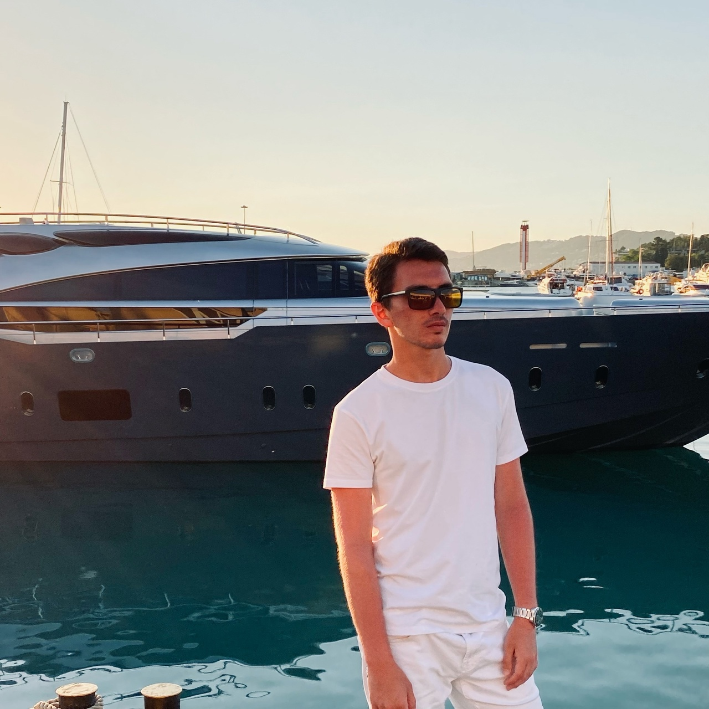

Меня зовут Ролан, мне 20 лет. Учусь на 3 курсе по специальности "Информатика и вычислительная техника". В свое время выбрал именно эту специальность, потому что она дала мне возможность для профессионального развития. Я начал свой путь с изучения языка программирования Java, после познакомился и кодил на других языках. Окончил 30+ курсов от "Введения в языки программирования" до "Создания приложений и сайтов".
Мой жизненный девиз — цитата Генри Форда: «Время не любит, когда его тратят впустую». Я стараюсь не допускать пустых часов и даже минут: учусь, прохожу тренинги и вебинары, читаю, смотрю интересные фильмы, провожу время с друзьями и семьёй. Мне кажется, это гораздо продуктивнее, чем просто предаваться мечтам или переживать о неудачах.
